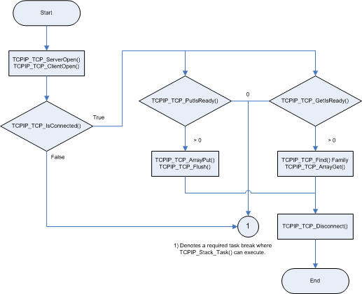

TCP is a standard transport layer_protocol described in RFC 793. It provides reliable stream-based connections over unreliable networks, and forms the foundation for HTTP, SMTP, and many other protocol standards
Abstraction Model
This module provides software abstraction of the TCP module existent in any TCP/IP Stack implementation.

How the Library Works
Connections made over TCP guarantee data transfer at the expense of throughput. Connections are made through a three-way handshake process, ensuring a one-to-one connection. Remote nodes advertise how much data they are ready to receive, and all data transmitted must be acknowledged. If a remote node fails to acknowledge the receipt of data, it is automatically retransmitted. This ensures that network errors such as lost, corrupted, or out-of-order packets are automatically corrected.
To accomplish this, TCP must use buffers for both the transmit and receive operations. Once the transmit buffer is full, no more data can be sent until the remote node has acknowledged receipt.
When the Harmony TCP/IP Stack is used without a RTOS, the application must return to the main system loop to allow the other services in the system, including the TCP/IP stack, to advance.
The remote node cannot transmit more data until the local device has acknowledged receipt and receiving space is available in the buffer. When a local application needs to read more data, it must return to the main system/application loop and wait for a new packet to arrive.
Core Functionality
The following diagram provides an overview for the use of the TCP module.

Server sockets are opened using TCPIP_TCP_ServerOpen. This function will open a listening socket_waiting for client connections on the specified TCP port number. A client socket_is opened using TCPIP_TCP_ClientOpen. This function will open a socket_that connects to a remote host. The remote host is specified using an IP address and a TCP port number.
Once connected, applications can read and write data. On each entry, the application must verify that the socket_is still connected. For most applications a call to TCPIP_TCP_IsConnected will be sufficient, but TCPIP_TCP_WasReset may also be used for listening sockets that may turn over quickly.
To write data, call TCPIP_TCP_PutIsReady to check how much space is available. Then, call the TCPIP_TCP_ArrayPut function to write data as space is available. Once complete, call TCPIP_TCP_Flush to transmit data immediately. Alternately, return to the main system/stack loop. Data will be transmitted by the internal TCP state machine as the buffer becomes full or a programmable delay time has passed.
To read data, call TCPIP_TCP_GetIsReady to determine how many bytes are ready to be retrieved. Then use the TCPIP_TCP_ArrayGet function to read data from the_socket, and/or the TCPIP_TCP_Find family of functions to locate data in the buffer. When no more data remains, return to the main system/stack loop to wait for more data to arrive.
If the application needs to close the connection, call TCPIP_TCP_Disconnect, and then return to the main system/stack loop and wait for the remote node to acknowledge the disconnection. Client sockets will be closed and associated resources freed, while listening sockets will wait for a new connection. For more information, refer to the examples provided with the MPLAB Harmony distribution examples, or read the associated RFC.
Library Interface
| Name | Description |
|---|---|
| Macros | |
| TCPIP_TCP_AUTO_TRANSMIT_TIMEOUT_VAL | Timeout before automatically transmitting unflushed data, ms. Default value is 40 ms. |
| TCPIP_TCP_CLOSE_WAIT_TIMEOUT | Timeout for the CLOSE_WAIT state, ms If the remote socket closes the connection the TCP/IP stack will automatically close the socket after this timeout. If the value is set to 0 then the socket will wait forever for the application to close the socket (default behavior). Default should be 0 |
| TCPIP_TCP_DELAYED_ACK_TIMEOUT | Timeout for delayed-acknowledgment algorithm, ms |
| TCPIP_TCP_DYNAMIC_OPTIONS | Enable the TCP sockets dynamic options set/get functionality If enabled, the functions: TCPIP_TCP_OptionsSet, TCPIP_TCP_OptionsGet and TCPIP_TCP_FifoSizeAdjust exist and are compiled in If disabled, these functions do not exist and cannot be used/called Note that this setting can affect modules that use TCP sockets |
| TCPIP_TCP_FIN_WAIT_2_TIMEOUT | Timeout for FIN WAIT 2 state, ms |
| TCPIP_TCP_KEEP_ALIVE_TIMEOUT | Timeout for keep-alive messages when no traffic is sent, ms |
| TCPIP_TCP_MAX_RETRIES | Maximum number of retransmission attempts |
| TCPIP_TCP_MAX_SEG_SIZE_TX | TCP Maximum Segment Size for TX. The TX maximum segment size is actually governed by the remote node's MSS option advertised during connection establishment. However, if the remote node specifies an unmanageably large MSS (ex: > Ethernet MTU), this define sets a hard limit so that TX buffers are not overflowed. If the remote node does not advertise a MSS option, all TX segments are fixed at 536 bytes maximum. This symbol sets an upper bound on the TCP MSS on the transmit side which can ignore/override the remote node advertising. |
| TCPIP_TCP_MAX_SOCKETS | The maximum number of sockets to create in the stack. When defining TCPIP_TCP_MAX_SOCKETS take into account the number of interfaces the stack is supporting. |
| TCPIP_TCP_MAX_SYN_RETRIES | Smaller than all other retries to reduce SYN flood DoS duration |
| TCPIP_TCP_MAX_UNACKED_KEEP_ALIVES | Maximum number of keep-alive messages that can be sent without receiving a response before automatically closing the connection |
| TCPIP_TCP_SOCKET_DEFAULT_RX_SIZE | Default socket RX buffer size Note that this setting affects all TCP sockets that are created and, together with TCPIP_TCP_MAX_SOCKETS, has a great impact on the heap size that's used by the stack (see TCPIP_STACK_DRAM_SIZE setting). When large RX bufferrs are needed, probably a dynamic, per socket approach, is a better choice (see TCPIP_TCP_OptionsSet function). The performance of a socket is highly dependent on the size of its buffers so it's a good idea to use as large as possible buffers for the sockets that need high throughput. Note that some modules (like HTTP) use their own settings to... more |
| TCPIP_TCP_SOCKET_DEFAULT_TX_SIZE | Default socket TX buffer size Note that this setting affects all TCP sockets that are created and, together with TCPIP_TCP_MAX_SOCKETS, has a great impact on the heap size that's used by the stack (see TCPIP_STACK_DRAM_SIZE setting). When large TX bufferrs are needed, probably a dynamic, per socket approach, is a better choice (see TCPIP_TCP_OptionsSet function). The performance of a socket is highly dependent on the size of its buffers so it's a good idea to use as large as possible buffers for the sockets that need high throughput. Note that some modules (like HTTP) use their own settings to... more |
| TCPIP_TCP_START_TIMEOUT_VAL | Timeout to retransmit unacked data, ms |
| TCPIP_TCP_TASK_TICK_RATE | The TCP task processing rate: number of milliseconds to generate an TCP tick. This is the tick that advances the TCP state machine. The default value is 5 milliseconds. The lower the rate (higher the frequency) the higher the module priority and higher module performance can be obtained The value cannot be lower than the TCPIP_STACK_TICK_RATE. |
| TCPIP_TCP_WINDOW_UPDATE_TIMEOUT_VAL | Timeout before automatically transmitting a window update due to a TCPIP_TCP_Get() or TCPIP_TCP_ArrayGet() function call, ms. |
| TCPIP_TCP_COMMANDS | TCPIP TCP info commands Enables/Disables the TCP command feature. This setting will add a TCP "info" command to the TCP/IP command menu allowing a run time inspection of the TCP sockets Set the value to 1 to enable, 0 to disable the feature. |
| TCPIP_TCP_MSL_TIMEOUT | Maximum Segment Length (MSL) timeout, seconds This value sets the time a socket will be in the TIME_WAIT/2MSL state after the socket performed an active close. RFC recommended value is 120 sec. Other common values are: 30/60 sec Note that if this symbol is defined to 0, then the TIME_WAIT/2MSL state is skipped! This could lead to duplicate sequence numbers problems if sockets are frequently/rapidly closed and reopened and normally should be avoided. |
| TCPIP_TCP_QUIET_TIME | This value specifies the TCP quiet time: TCP will not send any data for TCPIP_TCP_QUIET_TIME seconds after rebooting! Usualy this value should match the MSL value. Note that if this symbol is defined to 0, then the TCP quiet time state is skipped! During the quiet time there will be no TCP traffic initiated by TCP. So, clients won't be able to connect to remote hosts and servers won't reply to client requests. |
| TCPIP_TCP_EXTERN_PACKET_PROCESS | This setting enables/disables the processing of the RX packets by an external handler The user of the TCP can register an external function to process the incoming packets If true, the functionality is built in and could be used by the application If false, the functionality does not exist and the generated code is slightly smaller |
| Socket Management Functions | |
| TCPIP_TCP_ServerOpen | Opens a TCP socket as a server. |
| TCPIP_TCP_ClientOpen | Opens a TCP socket as a client. |
| TCPIP_TCP_Close | Disconnects an open socket and destroys the socket handle, releasing the associated resources. |
| TCPIP_TCP_Connect | Connects a client socket. |
| TCPIP_TCP_Bind | Binds a socket to a local address. |
| TCPIP_TCP_RemoteBind | Binds a socket to a remote address. |
| TCPIP_TCP_IsConnected | Determines if a socket has an established connection. |
| TCPIP_TCP_WasReset | Self-clearing semaphore indicating socket reset. |
| TCPIP_TCP_Disconnect | Disconnects an open socket. |
| TCPIP_TCP_Abort | Aborts a connection. |
| TCPIP_TCP_OptionsGet | Allows getting the options for a socket like: current RX/TX buffer size, etc. |
| TCPIP_TCP_OptionsSet | Allows setting options to a socket like adjust RX/TX buffer size, etc. |
| TCPIP_TCP_SocketInfoGet | Obtains information about a currently open socket. |
| TCPIP_TCP_SocketNetGet | Gets the current network interface of an TCP socket. |
| TCPIP_TCP_SocketNetSet | Sets the interface for an TCP socket |
| TCPIP_TCP_Task | Standard TCP/IP stack module task function. |
| TCPIP_TCP_SignalHandlerDeregister | Deregisters a previously registered TCP socket signal handler. |
| TCPIP_TCP_SignalHandlerRegister | Registers a TCP socket signal handler. |
| TCPIP_TCP_IsReady | Returns the current status of the TCP module |
| TCPIP_TCP_SocketsNumberGet | Returns the number of existent TCP sockets. |
| TCPIP_TCP_SocketTraceSet | Sets the current socket trace status. |
| TCPIP_TCP_PacketHandlerDeregister | Deregisters a previously registered packet handler. |
| TCPIP_TCP_PacketHandlerRegister | Sets a new packet processing handler. |
| Transmit Data Transfer Functions | |
| TCPIP_TCP_PutIsReady | Determines how much free space is available in the TCP TX buffer. |
| TCPIP_TCP_ArrayPut | Writes an array from a buffer to a TCP socket. |
| TCPIP_TCP_StringPut | Writes a null-terminated string to a TCP socket. |
| TCPIP_TCP_Put | Writes a single byte to a TCP socket. |
| TCPIP_TCP_Flush | Immediately transmits all pending TX data. |
| TCPIP_TCP_FifoTxFullGet | Determines how many bytes are pending in the TCP TX FIFO. |
| TCPIP_TCP_FifoTxFreeGet | Determines how many bytes are free and could be written in the TCP TX FIFO. |
| Receive Data Transfer Functions | |
| TCPIP_TCP_GetIsReady | Determines how many bytes can be read from the TCP RX buffer. |
| TCPIP_TCP_ArrayGet | Reads an array of data bytes from a TCP socket's RX buffer/FIFO. |
| TCPIP_TCP_ArrayPeek | Reads a specified number of data bytes from the TCP RX buffer/FIFO without removing them from the buffer. |
| TCPIP_TCP_ArrayFind | Searches for a string in the TCP RX buffer. |
| TCPIP_TCP_Find | Searches for a byte in the TCP RX buffer. |
| TCPIP_TCP_Get | Retrieves a single byte to a TCP socket. |
| TCPIP_TCP_Peek | Peaks at one byte in the TCP RX buffer/FIFO without removing it from the buffer. |
| TCPIP_TCP_Discard | Discards any pending data in the RCP RX FIFO. |
| TCPIP_TCP_FifoRxFreeGet | Determines how many bytes are free in the RX buffer/FIFO. |
| TCPIP_TCP_FifoSizeAdjust | Adjusts the relative sizes of the RX and TX buffers. |
| TCPIP_TCP_FifoRxFullGet | Determines how many bytes are pending in the RX buffer/FIFO. |
| Data Types and Constants | |
| TCP_ADJUST_FLAGS | TCP adjust RX and TX buffers flags. |
| TCP_OPTION_LINGER_DATA | Socket linger options. |
| TCP_PORT | Defines a TCP Port number. |
| TCP_SOCKET | Defines a TCP Socket. |
| TCP_SOCKET_INFO | TCP socket information. |
| TCP_SOCKET_OPTION | TCP Socket run-time options. |
| INVALID_SOCKET | Invalid socket indicator macro. |
| TCP_OPTION_THRES_FLUSH_TYPE | List of the socket half threshold TX flush types. |
| TCP_OPTION_KEEP_ALIVE_DATA | Socket keep alive options |
| TCPIP_TCP_MODULE_CONFIG | TCP module run-time configuration/initialization data. |
| TCPIP_TCP_SIGNAL_FUNCTION | TCP signal handler. |
| TCPIP_TCP_SIGNAL_HANDLE | TCP socket handle. |
| TCPIP_TCP_SIGNAL_TYPE | TCP run time signal/event types. |
| TCPIP_TCP_STATE | TCP socket state. |
| TCPIP_TCP_PACKET_HANDLER | Pointer to a function(handler) that will get called to process an incoming TCP packet. |
| TCPIP_TCP_PROCESS_HANDLE | Defines a TCP packet processing handle. |